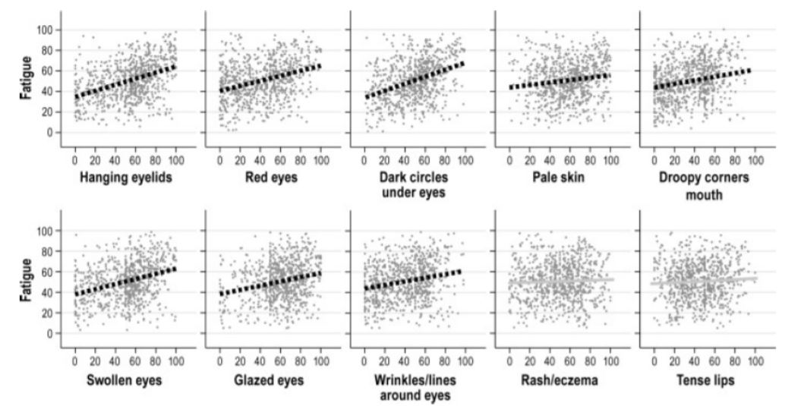
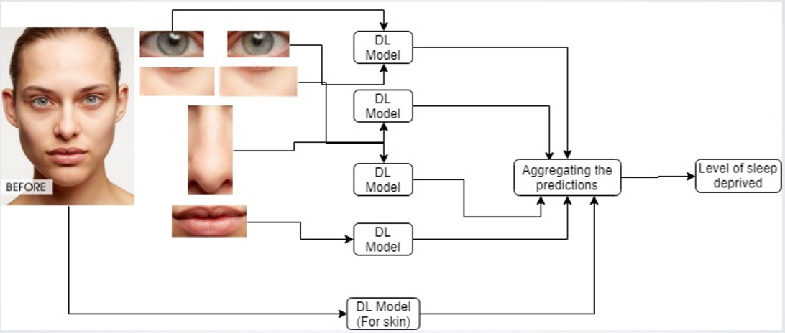
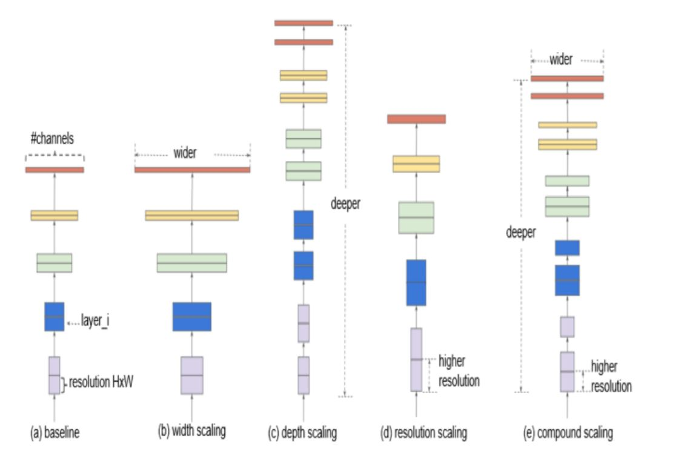
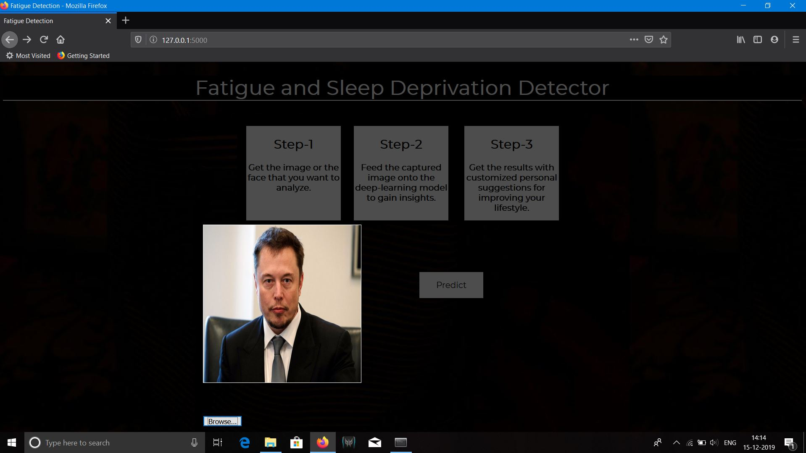
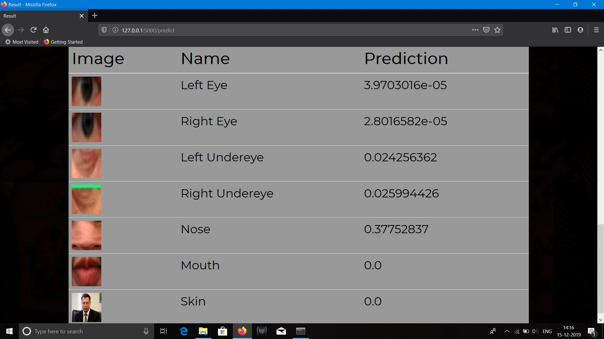
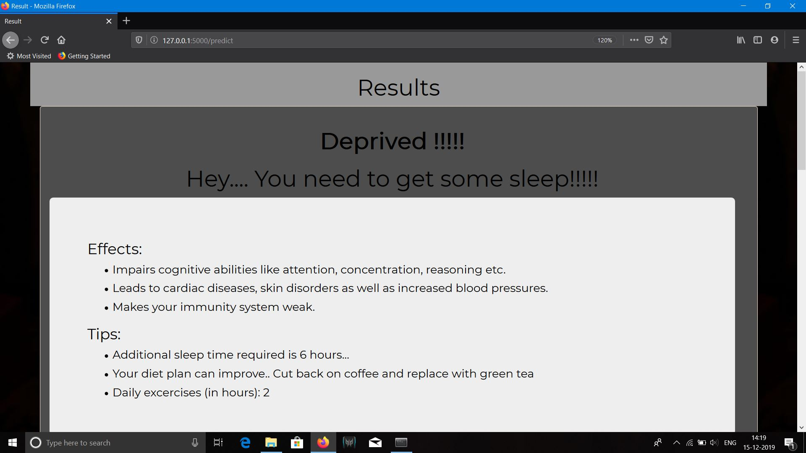

Background
There has been a lot of research done on drowsiness detecton in vehicles but there hasn’t been any project that could detect fatigue levels through photos in a environment outside vehicles. In this I want to talk about this project based on the research to detect fatigue levels of a person through a photograph. For this project the main facial cues used to detect fatigue levels are: Undereyes, Eyes, Mouth, Nose and Skin.

The complexities of fatigue have drawn much attention from researchers across various disciplines. Short-term fatigue may cause safety issue while driving; thus, dynamic systems were designed to track driver fatigue. Longterm fatigue could lead to chronic syndromes, and eventually affect individuals physical and psychological health. Traditional methodologies of evaluating fatigue not only require sophisticated equipment but also consume enormous time.
Proposal
Therefore ,in this project the attempt was to develop a novel and efficient method to predict individual’s fatigue rate by scrutinising human facial cues. The goal was to predict fatigue rate based on a single photo. This work represents a promising way to assess sleep-deprived fatigue, and the project will provide a viable and efficient computational framework for user fatigue modelling in large-scale.
Going over the architecture and the working of the system. In the picture below you can see the entire flow of the project or web application. 
In the beginning the input which is an image of a face is taken and fed into the system. The various facial cues that have been used for detecting the fatigue levels are then cropped out from the image and then fed into individual custom trained classification models which detect and output the fatigue levels. You can find the installation instructions and the steps to run the code in my Github repo.
That is in essence the high level gist of the project. But there were several technologies and individual processes that were done to bring the project together. These can be broadly divided into three phases. They are:
- Image Ingestion and Object Detection
- Classification
- Deployment
Image Ingestion and Object Detection Phase
This phase was performed using the famous computer vision library “OpenCV”. There are many numerous applications of OpenCV. Some of them are:
- Face Recogniton
- Object Detection
- Street view image stitching
- Medical image analysis and many more
OpenCV is a highly optimised library designed for real time applications. So what opencv does is that it converts the input image into numbers that can be understood using the “imread” function. So this image is fed and the necessary facial landmarks are cropped out. For detection of the face in general, eyes, nose , mouth we have used a pre-trained model readily available on the Internet. This can be done using OpenCV , dlib and Python. You can read this excellent tutorial from adrain pyimagesearch for facial extraction using dlib. But for undereyes there was not any readily available model therefore for this facial landmark a custom-trained object detection model was used.
But to train the model data was required therefore, the faces were downloaded from online sources such as unspalsh and google images and the undereyes were marked onto them. This was performed using LabelImg which is an open source graphical image annotation tool.
Then using the Tensorflow Object Detection API the new annotated data was used to train the model. The model used for training was inception-v2 with faster rcnn which are readily available for download in the tensorflow models repository.You can download this model here. Inception v2 here is used as a feature extractor. I have used this tutorial by Evan for performing this process. This tutorial explains all the underlying steps required to train your very own object detection model.
Some of the Images that were used for training the models are as follows:
Classification Phase
After these individual images were cropped out they were fed into classification models for training. These trained models would then be used later on for classifying new images. For the classification aspect of the facial cues EfficientNet was used which is a very powerful architecture. Unlike traditional CNN architecture which scale network dimensions, such as width, depth and resolution EfficientNet uniformly scales each dimension with a fixed set of scaling coefficients. More details can be found in this article.

An image from the blog which talks about the various scaling approaches.
Deployment Phase
For the deployment of the entire project the “Flask API” was used. It is an open-source micro web framework written in Python that is widely used for deployment purposes. For the front end or UI of the web application HTML/CSS was used. After each model derives the final results were calculated as a weighted sum of the facial cues.
Some of the screenshots of the project can be found below:   